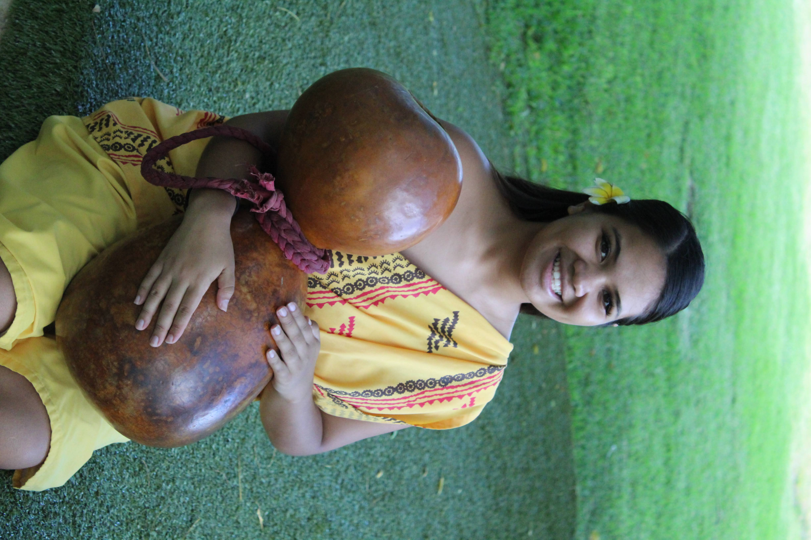

Experience
Ala Kukui
Dec 2023–Jun 2026
Operations Assistant
- Consolidated attendee records going back to 2016 from separate sheets into one database — merged and removed duplicates and cleaned the data so it could be analyzed
- Owned data entry after every event, turning written lists, attendance sheets, and group photos into accurate records
- Built a dashboard with formulas, pivot tables, and charts showing program growth, community demographics, and engagement — updates on its own as new entries are added
- Reported attendee data for grant reports and presentations to each program arm, so the numbers were easy to see and understand
- Built a Google Sheets occupancy tracker that pulls live booking data and tracks year-to-date bookings against annual goals
- Combined and cleaned guest records from active and archived retreats into one de-duplicated Mailchimp audience
- Wrote SOPs and process documentation for tasks that previously had none
- Managed all retreat correspondence and coordinated guest bookings with accommodations
- Conceptualized and built online database so bookings can be done remotely
- Managed correspondence and coordinated bookings for up to 30 retreats per quarter
- Assisted with creating newsletters, planning programs/events, and fundraising initiatives
- Coordinated fundraising initiatives that raised over $11,000 in 2025
- Developed, tested, and debugged Ala Kukui's website through WordPress
Polynesian Cultural Center
Jul 2021–Dec 2023
Student Lead / Demonstrator Guide

- Led as many as five cultural presentations daily for audiences of 1,200–2,000 guests
- Trained and mentored new team members, fostering collaboration and efficiency
- Applied strong organizational skills for smooth workflow through clear communication
Polynesian Cultural Center
2019–2020
Food Service Worker
Hāna High & Elementary School
Oct–Dec 2020
Educational Assistant Substitute
Ma Ka Hana Ka Ike
2015–2017
Construction / Carpentry
- All aspects of carpentry and community construction projects
Education & Certifications
Brigham Young University–Hawaii
Dec 2023
B.S. in Computer Science
- Minor in Exercise Sports Science – Coaching
- Minor in Visual Arts
Tech-Moms 2.0
Aug 2026–Present
Data Analytics & AI Cohort
- Writing SQL queries with joins, analyzing data in Python, and building dashboards in Tableau
- Built a Google Sheets bike sales dashboard as a pre-requisite project
- Capstone in progress: a data analysis project for a local business or nonprofit
Tech-Moms
Jan–Mar 2026
Technical Skills Course